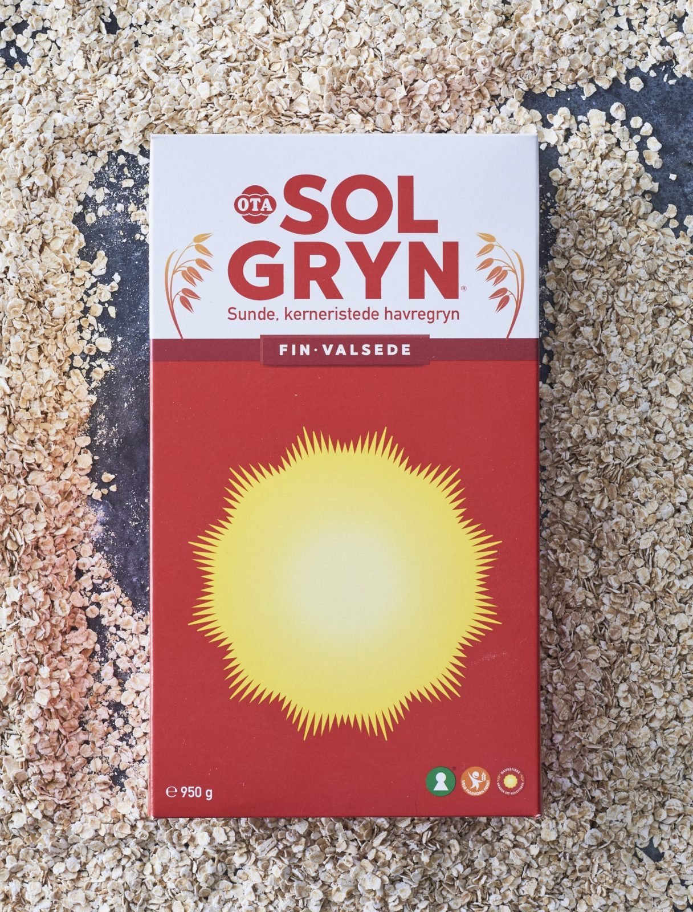

Solgryn is the online alias of a Danish indie game developer named Jonas Kærlev. He is best known for creating the notoriously difficult platformer game I Wanna Be the Boshy, which gained popularity in the early 2010s for its brutal difficulty and chaotic style.
Why the Cereal Box Logo? The name “Solgryn” is also a real Danish oatmeal cereal brand, and the logo he uses in his games is a parody of that. It's become his recognizable "developer logo."
